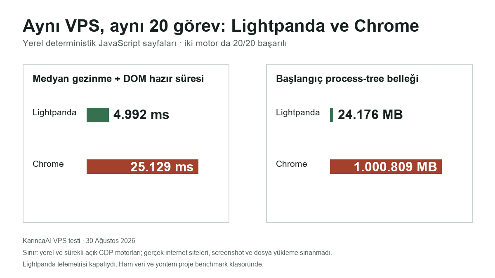

Lightpanda nedir, ne zaman kullanılır?
Lightpanda, ekranda tarayıcı penceresi çizmeden web otomasyonu için çalışan bir tarayıcı motorudur. Tekrarlanan, metin ve DOM ağırlıklı web işlerinde tam Chrome motorunun başlangıç ve bellek maliyetini azaltmayı hedefler. Linux/WSL2 üzerinde kaynak baskısı gerçekten ölçülen ve görsel özellik istemeyen görevlerde adaydır. Ekran görüntüsü, PDF, dosya yükleme, kalıcı profil veya tam Chrome uyumu kritikse tek başına uygun değildir; Chrome/auto yolu korunur.
Teknik karşılığı: Zig ile yazılmış, headless (başsız) web otomasyonuna odaklanan ve Hermes'te desteklenmeyen işlerde Chrome geri dönüşüyle kullanılabilen bir browser engine'dir (tarayıcı motoru).
Bu yazıda ne yapabileceksin?
- Lightpanda'yı sade bir cümleyle tanımla.
- Uygun ve uygun olmayan görevi ayır.
- Kendi yolunu gerekçesiyle seç.
Chrome'u her yük için donanımlı bir kamyon, Lightpanda'yı belirli hafif işler için servis aracı gibi düşünebilirsin. Buradaki karşılık görev türünün motoru seçmesi, desteklenmeyen ihtiyacın geri dönüşe gitmesi ve tamamlanan gerçek işin kanıt sayılmasıdır. Benzetme hız veya RAM sonucu kanıtlamaz; o sonuçlar aynı görev ve URL kümesiyle ölçülür.
- Uygun aday: Linux VPS'te sık tekrarlanan, metin/DOM okuyan, ekran görüntüsü istemeyen ve Chrome RAM baskısı ölçülmüş görev.
- Yakın karşı örnek: Aynı görev ekran görüntüsü üretmek zorunda. Tek ayırıcı koşul görsel çıktı ihtiyacıdır; “web işi” olması yeterli değildir.
Bu rehberin tamamladığı iş: tanım + uygunluk + gerekçeli karar + güvenli deney planı.
Dayanak: resmî Hermes/Lightpanda belgeleri, üretici benchmarkı ve KarıncaAI'nin izole VPS A/B testi.
Yerel olarak doğrulanan: Aynı 20 JavaScript sayfasında iki motor da 20/20 başarılı oldu; Lightpanda medyan 4,992 ms, Chrome 25,129 ms ölçüldü.
Bellek gözlemi: Lightpanda yaklaşık 24 MB; izole Chrome process-tree başlangıcı yaklaşık 1.001 MB idi.
Kapsam dışı: Gerçek internet sitesi uyumluluğu, screenshot/PDF/dosya yükleme, kalıcı Hermes ayarı, sonuç garantisi ve X yayını.
Bu yazıda ne yapabileceksin?
- Lightpanda'yı bir sade cümleyle tanımlayabilirsin.
- Metin ağırlıklı uygun aday ile görsel özellik isteyen yakın karşı örneği ayırabilirsin.
- Kendi görevin için üç yoldan birini seçip gerekçelendirebilirsin.
- Üretici benchmarkını KarıncaAI yerel testinden ayırabilirsin.
- Deneme öncesi üç önkoşulu ve güvenli durma koşulunu yazabilirsin.
Bölüm haritası
Başlamadan önce üç parça
| Sade parça | Teknik adı | İşi | Bununla karıştırma |
|---|---|---|---|
| Tarayıcı motoru | browser engine | Sayfayı açıp web işini yürütür. | Ekranda görünen pencere değildir. |
| Tarayıcı sürücüsü | agent-browser | Hermes komutlarını seçilen motora iletir. | Lightpanda motorunun kendisi değildir. |
| Geri dönüş | Chrome fallback | Desteklenmeyen işi Chrome yoluna taşır. | Başarı garantisi değildir. |
| Görev kanıtı | observable outcome | Asıl işin doğru tamamlandığını gösterir. | Komutun hata vermemesi değildir. |
Sistem nasıl çalışır?
İlişki basittir: görev motoru seçer; motor desteği kontrol edilir; ihtiyaç desteklenmiyorsa Chrome geri dönüşü devreye girer; sonunda komut değil, gözlenebilir görev sonucu değerlendirilir.
| Görev | Metin/DOM okuma, görsel çıktı ihtiyacı ve tekrarlama sıklığı seçimi etkiler. |
|---|---|
| Motor | Lightpanda aday olabilir; fakat motorun desteklemediği kritik ihtiyaçta Chrome/auto yolu kalır. |
| Kanıt | Süre, tepe RAM, görev başarısı, hata oranı ve fallback sayısı birlikte okunur. |
Yanlış kavram: Bir ayar satırı motoru kurar. Düzeltme: Ayar rota levhasıdır; motor ve sürücü ayrıca bulunmalıdır.
Fallback nasıl okunmalı? Lightpanda bir komutu desteklemez veya hata verirse Hermes aynı işi Chrome ile yeniden deneyebilir. Chrome görevi tamamlarsa bu sistem başarısıdır; Lightpanda'nın o adımı başardığı anlamına gelmez. Üretim pilotunda hangi adımın neden Chrome'a geçtiği ayrıca kaydedilmelidir.
Ekran görüntüsü ve dosya yükleme yalnız bilinen örneklerdir. Desteklenmeyen Web API'leri, oturum akışları, siteye özgü JavaScript ve DOM farklılıkları da Lightpanda yolunu bozabilir.
Bölüm haritasına dönTam örnek ve tek-koşullu karşı örnek
- Amaç
- Her beş dakikada metin toplayan Linux VPS görevi için sonraki güvenli adımı seçmek.
- Başlangıç
- İzole Linux VPS ortamı; sürekli açık Chrome ve Lightpanda CDP motorları; aynı 20 yerel JavaScript sayfası; her sayfada 200 DOM öğesi ve görünür başarı işareti.
- Tahmin
- Metin/DOM ağırlıklı bu görevde Lightpanda'nın daha düşük motor yükü ve daha kısa gezinme süresi göstermesi; iki motorun da aynı çıktıyı üretmesi beklenir.
- Eylem
- Motor sırasını her turda değiştirerek her iki motoru 20 kez aynı görev koşulunda çalıştır.
- Gözlenen sonuç
- İki motor da 20/20 başarılı oldu. Medyan süre Lightpanda 4,992 ms, Chrome 25,129 ms; başlangıç process-tree RSS yaklaşık 24 MB ve 1.001 MB idi.
- Beklenenle eşleşme
- Evet, kontrollü yerel iş yükünde. Bu eşleşme gerçek internet sitesi, görsel iş veya üretim uyumluluğu garantisi değildir.
- İlk güvenli kontrol
- Üretim öncesinde izinli gerçek URL kümesi, görev başarısı, hata oranı, fallback sayısı ve geri alma yolu ayrı test edilmelidir.
- Durma
- Gerçek görev başarısı düşerse veya görsel/dosya ihtiyacı kritikse
auto/Chrome yolunu koru.
Tek koşul değişince
Aynı görev, VPS, sıklık, RAM şüphesi ve URL kümesi korunur. Yalnız görev her sayfanın ekran görüntüsünü üretmek zorunda olur.
Yeni karar: Chrome/auto yolunda kal. Neden: Görsel çıktı görevin başarı koşuludur; hafif motor adaylığından daha belirleyicidir. “Metin de topluyor” benzerliği bu tek kritik koşulu örtmez.
4 soruda kendi yolunu seç
Bu araç kurulum önermez. Cevapların yalnız güvenli bir sonraki adımı belirler; geri dönüp her cevabı değiştirebilirsin.
Desteklenen Linux/WSL2 ortamı var mı?
Karar özeti
- Cevap özeti
- Gerekçe
- Sonraki güvenli adım
- Durma / geri dönüş koşulu
JavaScript kapalıysa aşağıdaki statik karar özeti bütün yolları gösterir.
Statik karar özeti: bütün yollar
| Koşul | Yol | Güvenli sonraki adım |
|---|---|---|
| Desteklenen Linux/WSL2 yok veya bilinmiyor | Önce ölç ve ortamı hazırla | Ortam/sürüm uygunluğunu salt-okunur doğrula; motor ayarını değiştirme. |
| Kritik görsel, dosya veya tam uyum ihtiyacı var | Chrome/auto yolunda kal | Görev kanıtını Chrome ile sürdür; görsel gereksinim kalkmadan motor denemesi planlama. |
| Görev tekrarlı değil ya da darboğaz ölçülmedi | Önce ölç ve ortamı hazırla | Aynı görevde Chrome taban çizgisini, süreyi ve tepe RAM'i kaydet. |
| Aynı görev/URL kümesiyle geri alınabilir A/B yok veya bilinmiyor | Önce ölç ve ortamı hazırla | İzinli URL, başarı ölçütü, süre/RAM alanları ve geri alma yolunu yaz. |
| Dört koşul da olumlu | Şimdi deneme planla | Önce mevcut Chrome/auto yolunu kaydet; sonra kontrollü pilot için ayrı onay iste. |
Lightpanda ve Chrome'u aynı ölçütlerde karşılaştır
Bu tablo KarıncaAI'nin yerel ve kontrollü iş yükündeki ölçümü gösterir. Gerçek internet siteleri veya görsel görevler için genel performans garantisi vermez.
Üretici testi: Lightpanda'nın 933 sayfalık AWS EC2 m5.large ve 25 paralel görev benchmarkı.
Sahip: Lightpanda üreticisi · Koşul: yayınlanan AWS iş yükü ve paralellik · Kaynak: benchmark yazısı · KarıncaAI durumu: çalıştırılmadı; yerel hız/RAM vaadi değildir.
KarıncaAI VPS testi: Aynı 20 yerel JavaScript sayfası, sürekli açık izole CDP motorları, her sayfada 200 DOM öğesi.
Sonuç: 20/20 başarı; Lightpanda medyan 4,992 ms, Chrome 25,129 ms. Sınır: İnternet gecikmesi, screenshot, dosya yükleme ve gerçek site uyumluluğu bu testte yok.

Test protokolü: Motorlar sürekli açık tutuldu; aynı 20 yerel sayfa kullanıldı; her sayfa 200 DOM öğesi ve data-ready=true kanıtı üretti; motor sırası her turda değiştirildi; süre medyan/p95 ile, bellek bütün süreç ağacının RSS toplamıyla ölçüldü.
| Ölçüt | Lightpanda | Chrome/auto | Kanıt sahibi ve koşulu |
|---|---|---|---|
| Görev türü | Metin/DOM ağırlıklı aday | Genel uyum yolu | Resmî davranış; görev ihtiyacına bağlı |
| Görsel özellik ihtiyacı | Kritikse tek başına uygun değil | Kritik ihtiyacı koruyan yol | Hermes belgesi; destek ihtiyacına bağlı |
| Uyumluluk | Yerel sentetik DOM görevinde 20/20 | Yerel sentetik DOM görevinde 20/20 | Gerçek site ve görsel özellik testi yok |
| Medyan gezinme + DOM hazır | 4,992 ms | 25,129 ms | KarıncaAI yerel sentetik test; 20 koşu |
| Başlangıç process-tree RSS | 24,176 MB | 1.000,809 MB | KarıncaAI izole VPS motorları |
| Görev başarısı | 20/20 | 20/20 | 200 DOM öğesi + data-ready işareti |
| Chrome geri dönüş sayısı | Bu testte ölçülmedi | Uygulanmaz | Screenshot/PDF yolu sınanmadı |
| Kurulum/bakım yükü | Geçici binary ve CDP sunucusu gerekir | Mevcut çalışan yol korunur | VPS'te geçici binary test edildi; Hermes kalıcı ayarı değişmedi |
Güvenli deney sınırını çıkar
Bu bölüm kurulum öğretmez. Denemeden önce geç/kal kapılarını görünür yapar; kritik bir koşul eksikse “deneme hazır” sonucu üretmez.
- Desteklenen ortam, sürüm, Lightpanda binary ve agent-browser doğrulandı mı?
- Mevcut ayar ve çalışan Chrome/auto yolu kaydedildi mi?
- Aynı görev, izinli URL kümesi, başarı ölçütü, süre/RAM ve hata alanları tanımlı mı?
- Telemetri varsayılanı ve
LIGHTPANDA_DISABLE_TELEMETRY=truekapatma yolu görünür mü? - Ürünün Beta/WIP olduğu, hata ve çökme ihtimali açık mı?
- URL'ler için izin, robots.txt, kullanım şartları ve hız sınırı kontrol edildi mi?
- Özel hesap, çerez, anahtar veya özel URL örneğe girmiyor mu?
Gerçek URL pilotunda ek kapılar
- Test hesabı üretim hesabından ve gerçek kullanıcı oturumundan ayrılmalı.
- Çerez, token, özel URL ve kişisel veri loglara yazılmamalı; hata kayıtları maskelenmeli.
- Yetki, görevin gerektirdiği en küçük kapsamla sınırlandırılmalı.
- Beklenen alanlar, kayıt sayısı, yinelenen kayıt ve kısmi başarısızlık kabul ölçütleri önceden yazılmalı.
- Kritik adım Chrome'a düşerse sonuç sistem başarısı sayılır; Lightpanda-only başarı sayılmaz.
Resmî özellik / sınır: Telemetri kapatma yolu, Beta/WIP uyarısı ve kurulumla ilişkili koşullar gerçek denemeden önce kontrol edilmelidir.
Sahip: Lightpanda belgeleri · Koşul: test edilen nightly sürüm · Kaynak: kurulum belgesi · KarıncaAI durumu: telemetri kapalı geçici VPS binary ile izole test yapıldı; Hermes kalıcı ayarı değiştirilmedi.
Çalıştığını nasıl kanıtlarsın, ne zaman durursun?
Başarı kanıtı: süre + tepe RAM + görev başarısı + hata oranı + fallback sayısı. Yalnız ayarın hata vermemesi başarı değildir.
Yakın hata: ayar lightpanda, fakat motor bulunmuyor. İlk güvenli kontrol: binary ve sürücü varlığını doğrula. Durma: kurulumu körlemesine tekrarlama; auto yolunu koru.
Geri alma örneği: Değişiklikten önce mevcut browser.engine değerini kaydet. Pilot yalnız ayrılmış görev/URL kümesinde çalışsın. Kritik hata, beklenmeyen veri erişimi veya görev başarısında düşüş olursa pilotu durdur; motoru hermes config set browser.engine auto ile önceki güvenli yola döndür ve Chrome göreviyle sonucu doğrula.
Bu yerel demoda geri bildirim kaydedilmez. Bir kayıt hedefi yazılıp aynı kayıt kimliği geri okunmadıkça “Not edildi” denmez.
Kararını geri çağır ve başka göreve aktar
Rehbere bakmadan şunları söyleyebiliyorsan kılavuzun bu sürümünün bitiş çizgisine geldin:
- Lightpanda'yı bir cümleyle tanımla.
- Bir uygun ve bir uygun olmayan görevi ayır.
- Üretici testi ile yerel testi ayır.
- Kendi yolunu ve ilk güvenli adımını söyle.
- Farklı bir web görevine aynı dört soruyu uygula.
Zorunlu kanıt alanı yoksa sonuç “eksik veri”dir. Altı kutuyu işaretlemek, tek başına karar briefi hazırlamaz.
Bölüm haritasına dönKaynaklar ve değişiklik kaydı
Değişiklik kaydı: V1 görev-kılavuzu seçildi; klavye/JS-off/320–1440 QA geçti; 30 Ağustos 2026 izole VPS A/B sonucu eklendi. Bu sayfa kalıcı Hermes ayarı veya X yayın izni değildir.
Resmî ürün ve benchmark kaynakları
- Hermes Browser Automation — resmi davranış ve geri dönüş bağlamı.
- Lightpanda + Hermes rehberi — resmi entegrasyon bağlamı.
- Lightpanda kurulum belgesi — gerçek denemeden önce incelenecek sürüm/koşul.
- Lightpanda benchmark koşulları — üretici testi; KarıncaAI yerel sonucu değildir.
- KarıncaAI VPS A/B raporu — 20 yerel görev, yöntem, ham veri ve sınırlar.